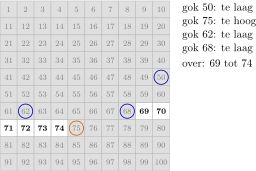
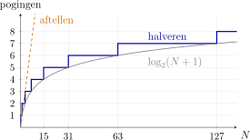
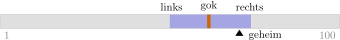
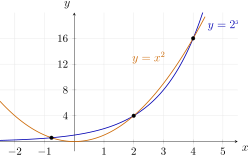
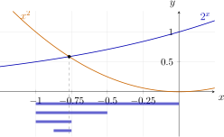
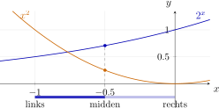
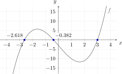
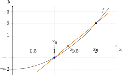
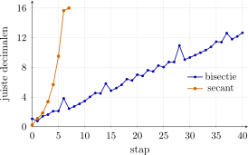

Zoeken en benaderen
I Informaticawetenschappen
1 Van programma naar algoritme
Je kent de bouwstenen van Python. Maar wat schrijf je ermee op? Daar gaat de informatica over.
Een algoritme is een methode die een probleem stap voor stap oplost, zo precies dat een computer ze kan uitvoeren. Een programma is een algoritme in één bepaalde taal.
Enkele bekende algoritmen:
-
• Euclides: de grootste gemene deler;
-
• sorteren: een lijst van klein naar groot;
-
• routeplanner: de snelste weg;
-
• zoeken: snel iets terugvinden.
2 Wat doen we in dit hoofdstuk?
Geen nieuwe Python, enkel:
-
• variabelen;
-
• if;
-
• while.
Nieuw is de manier van denken.
Drie ideeën:
-
1. raden door te halveren: \(1\) tot \(100\) in hoogstens \(7\) pogingen;
-
2. een nulwaarde zoeken door te halveren: de bisectiemethode;
-
3. benaderen met een rechte: de secantmethode, veel sneller.
Bij elk idee twee vragen:
-
• juist: werkt het altijd?
-
• snel: hoeveel stappen zijn er nodig?
Eén regel zetten we voor je klaar: die geeft een wiskundige functie een naam, zodat je ze kunt gebruiken zoals abs() of round().
II Raad het getal
1 Een slimme strategie
Iemand denkt aan een getal van \(1\) tot \(100\). Jij raadt en hoort enkel te hoog, te laag of juist.
-
• één voor één: werkt altijd, maar tot \(100\) pogingen;
-
• telkens het midden: elke gok sluit de helft uit.

Na vier gokken blijven er hoogstens zes getallen over.
2 Waarom hoogstens zeven pogingen?
Elke gok halveert wat nog kan:
\[ 100 \xrightarrow {\text {gok 1}} 50 \xrightarrow {\text {gok 2}} 25 \xrightarrow {\text {gok 3}} 12 \xrightarrow {\text {gok 4}} 6 \xrightarrow {\text {gok 5}} 3 \xrightarrow {\text {gok 6}} 1 \]
-
• na \(6\) gokken blijft er één getal over;
-
• gok \(7\) is dus zeker juist.
Twee keer zoveel getallen? Maar één gok extra.
\[ \begin {array}{r|r|r} \text {getallen} & \text {aftellen} & \text {halveren} \\ \hline 100 & 100 & \opl [0pt]{7} \\ 1\,000 & 1\,000 & \opl [0pt]{10} \\ 1\,000\,000 & 1\,000\,000 & \opl [0pt]{20} \\ 8\,000\,000\,000 & 8\,000\,000\,000 & \opl [0pt]{33} \end {array} \]
Met \(33\) vragen vind je één mens op de hele wereld.
Voor de hele wereldbevolking moet je wel iedereen op een rij kunnen zetten.
3 Halveren en logaritmen
Met \(n\) pogingen vind je een getal uit \(2^n - 1\) mogelijkheden. Waarom? Teken de boom in oefening 2. Hoeveel pogingen heb je nodig voor \(N\) getallen?
\[ 2^n - 1 \geq N \iff 2^n \geq N + 1 \iff n \geq \opl [0pt]{\log _2 (N+1)} \]
Het aantal pogingen is \(\log _2(N+1)\), naar boven afgerond.
\[ \begin {array}{r|r|r} N & \log _2(N+1) & \text {pogingen} \\ \hline 100 & \opl [0pt]{6.66} & 7 \\ 1\,000 & \opl [0pt]{9.97} & 10 \\ 1\,000\,000 & \opl [0pt]{19.93} & 20 \\ 8\,000\,000\,000 & \opl [0pt]{32.90} & 33 \end {array} \]
Tien keer zoveel getallen? Maar \(\log _2 10 \approx 3.3\) pogingen extra.

Het aantal stappen groeit als een logaritme: binair zoeken is logaritmisch.
Op het rekentoestel: \(\log _2 x = \dfrac {\log x}{\log 2}\).
4 Binair zoeken
Deze strategie heet binair zoeken: vergelijk met het midden en houd één helft over.
Werkt enkel als de hoop gerangschikt is:
-
• getallen van klein naar groot;
-
• woorden in een woordenboek;
-
• namen in een klaslijst.
Zonder volgorde? Dan valt er niets te halveren.
Waarom binair? Links of rechts, dus twee (bi) keuzes.
Een lijst ordenen om er sneller in te zoeken, deden de Babyloniërs rond 200 voor Christus al. Binair zoeken als algoritme werd voor het eerst vermeld in 1946, door John Mauchly, een van de bouwers van de ENIAC. Het bleek moeilijker dan het lijkt: de gepubliceerde versies werkten enkel voor lijsten met \(1\), \(3\), \(7\), \(15\), … elementen, tot Derrick Lehmer in 1960 een versie gaf die voor elke lengte werkt.
5 De computer raadt
Eerst zelf op papier: oefening 1.
-
• geheim: het getal dat de computer zoekt;
-
• links en rechts: het kleinste en grootste getal dat nog kan;
-
• de if zegt te hoog of te laag.
Stap met de bugknop door de code.

geheim = 71
links = 1
rechts = 100
gok = (links + rechts) // 2
pogingen = 1
while gok != geheim:
if gok < geheim:
links = gok + 1
else:
rechts = gok - 1
gok = (links + rechts) // 2
pogingen += 1
print("Gevonden:", gok, "na", pogingen, "pogingen")Waarom //? Gehele deling: 151 // 2 is \(75\), niet \(75.5\).
Waarom gok + 1? Van gok weten we al dat het niet juist is.
Speelt de computer vals? Nee: hij vergelijkt enkel met geheim.
6 Pen-en-papieroefeningen
Oefening 1
Voer dit programma uit op papier. Noteer bij elke gok links, rechts en gok. Controleer daarna op de site door dit programma regel per regel te doorlopen. De tabel in de oplossing groeit mee bij elke gok.
geheim = 71
links = 1
rechts = 100
gok = (links + rechts) // 2
pogingen = 1
while gok != geheim:
if gok < geheim:
links = gok + 1
else:
rechts = gok - 1
gok = (links + rechts) // 2
pogingen += 1
print("Gevonden:", gok, "na", pogingen, "pogingen")
\[ \begin {array}{c|c|c|l} \texttt {links} & \texttt {rechts} & \texttt {gok} & \\ \hline 1 & 100 & 50 & \text {te laag} \\ 51 & 100 & 75 & \text {te hoog} \\ 51 & 74 & 62 & \text {te laag} \\ 63 & 74 & 68 & \text {te laag} \\ 69 & 74 & 71 & \text {juist} \end {array} \]
Het programma vindt \(71\) na \(5\) pogingen.
Oefening 2
Het programma raadt een getal van \(1\) tot \(15\). Teken een boom: bovenaan de eerste gok, daaronder de gok na te laag links en na te hoog rechts, enzovoort.
-
(a) Hoeveel getallen vindt het programma bij de eerste, de tweede, de derde en de vierde gok?
\(1\), \(2\), \(4\) en \(8\)
Elk niveau van de boom telt twee keer zoveel getallen als het vorige.
-
(b) Leg met de boom uit waarom je met \(4\) pogingen hoogstens \(15\) getallen aankunt. Hoeveel zijn het er met \(5\) pogingen?
\(1 + 2 + 4 + 8 = 15\); met \(5\) pogingen \(31\) Met \(4\) pogingen heeft de boom \(4\) niveaus, samen \(1 + 2 + 4 + 8 = 15 = 2^4 - 1\) getallen. Een vijfde niveau telt \(16\) getallen, dus met \(5\) pogingen zijn het er \(15 + 16 = 31 = 2^5 - 1\).
Oefening 3
Het programma raadt een getal van \(1\) tot \(100\).
-
(a) Welke getallen vindt het bij de tweede gok?
\(25\) en \(75\) Na te hoog bij \(50\) is de gok \((1 + 49) \mathbin {//} 2 = 25\), na te laag is ze \((51 + 100) \mathbin {//} 2 = 75\).
-
(b) Geef een getal waarvoor het programma \(7\) pogingen nodig heeft.
bijvoorbeeld \(100\) Voor \(100\) zijn de gokken \(50\), \(75\), \(88\), \(94\), \(97\), \(99\) en \(100\).
-
(c) Voor hoeveel getallen heeft het \(7\) pogingen nodig?
\(37\) Met \(6\) pogingen vindt het hoogstens \(2^6 - 1 = 63\) getallen. De overige \(100 - 63 = 37\) getallen vindt het pas bij de zevende gok.
Oefening 4
Iemand past in het programma uit De computer raadt de regel links = gok + 1 aan tot links = gok.
-
(a) Voer het aangepaste programma uit op papier, met geheim = 100. Noteer bij elke gok links, rechts en gok.
het programma blijft \(99\) gokken
\[ \begin {array}{c|c|c|l} \texttt {links} & \texttt {rechts} & \texttt {gok} & \\ \hline 1 & 100 & 50 & \text {te laag} \\ 50 & 100 & 75 & \text {te laag} \\ 75 & 100 & 87 & \text {te laag} \\ 87 & 100 & 93 & \text {te laag} \\ 93 & 100 & 96 & \text {te laag} \\ 96 & 100 & 98 & \text {te laag} \\ 98 & 100 & 99 & \text {te laag} \\ 99 & 100 & 99 & \text {te laag} \\ 99 & 100 & 99 & \dots \end {array} \]
-
(b) Leg uit wat er misgaat.
\((99 + 100) \mathbin {//} 2 = 99\), dus links schuift niet meer op Zodra rechts één meer is dan links, is de gok gelijk aan links. Is die te laag, dan krijgt links opnieuw dezelfde waarde en verandert er niets meer: de lus stopt nooit. Met links = gok + 1 valt de gok zelf weg, en wordt het interval bij elke gok kleiner.
Oefening 5
In deze gerangschikte lijst zoeken we \(40\) met binair zoeken.
\[ \begin {array}{c|*{15}{c}} \text {plaats} & 1 & 2 & 3 & 4 & 5 & 6 & 7 & 8 & 9 & 10 & 11 & 12 & 13 & 14 & 15 \\ \hline \text {getal} & 3 & 7 & 11 & 14 & 19 & 23 & 28 & 31 & 36 & 42 & 47 & 53 & 58 & 64 & 70 \end {array} \]
links en rechts zijn nu plaatsen in de lijst, en het midden is de plaats (links + rechts) // 2.
-
(a) Noteer bij elke stap links, rechts, het midden en het getal dat daar staat.
het midden is achtereenvolgens \(8\), \(12\), \(10\) en \(9\)
\[ \begin {array}{c|c|c|c|l} \texttt {links} & \texttt {rechts} & \text {midden} & \text {getal} & \\ \hline 1 & 15 & 8 & 31 & \text {te klein} \\ 9 & 15 & 12 & 53 & \text {te groot} \\ 9 & 11 & 10 & 42 & \text {te groot} \\ 9 & 9 & 9 & 36 & \text {te klein} \\ 10 & 9 & & & \end {array} \]
-
(b) Hoe merk je dat \(40\) niet in de lijst staat? Welke voorwaarde zet je daarom in de while?
links komt voorbij rechts; while links <= rechts: Na de laatste stap is links groter dan rechts: er blijft geen enkele plaats meer over. De lus mag dus enkel doorgaan zolang links <= rechts. Het programma uit De computer raadt heeft die voorwaarde niet nodig, want daar zit het geheim altijd tussen \(1\) en \(100\).
Oefening 6
Speel met je buur het raadspel met de getallen van \(1\) tot \(100\). Wie raadt, schrijft de getallen op een strook en streept na elk antwoord weg wat niet meer kan.
-
(a) Speel drie keer met de strategie één voor één en drie keer met telkens het midden. Noteer telkens het aantal pogingen.
halveren: nooit meer dan \(7\) Met één voor één kan het van \(1\) tot \(100\) pogingen duren, gemiddeld ongeveer \(50\). Met telkens het midden zijn het er nooit meer dan \(7\).
-
(b) Verzamel de resultaten van de klas. Wat is per strategie het gemiddelde?
ongeveer \(50.5\) tegenover ongeveer \(5.8\) Kiest je buur elk getal even vaak, dan is het gemiddelde bij één voor één \(50.5\). Bij telkens het midden vind je \(1\) getal bij de eerste gok, \(2\) bij de tweede, \(4\), \(8\), \(16\) en \(32\) bij de volgende, en de overige \(37\) bij de zevende. Gemiddeld is dat
\[ \frac {1 \cdot 1 + 2 \cdot 2 + 4 \cdot 3 + 8 \cdot 4 + 16 \cdot 5 + 32 \cdot 6 + 37 \cdot 7}{100} = \frac {580}{100} = 5.8 \]
pogingen. De resultaten van de klas liggen daar in de buurt.
7 Programmeeroefeningen
Oefening 7
Download oefennotebookOpgave. Denk aan een getal van \(1\) tot \(100\). Schrijf een programma dat dat getal raadt door telkens het midden te nemen. Na elke gok antwoord je met h (mijn getal is hoger), l (mijn getal is lager) of j (juist). Toon op het einde het aantal pogingen.
Denk vooraf na: Hoeveel pogingen heeft je programma hoogstens nodig?
Vertrek van het programma hierboven. Wat komt er in de plaats van geheim?
Stel de vraag in de voorwaarde van de lus niet, maar in de lus zelf. Dan heb je voor de lus al een eerste antwoord nodig.
links = 1
rechts = 100
gok = (links + rechts) // 2
pogingen = 1
antwoord = input("Is het " + str(gok) + "? (h/l/j) ")
while antwoord != "j":
...
print("Gevonden na", pogingen, "pogingen")links = 1
rechts = 100
gok = (links + rechts) // 2
pogingen = 1
antwoord = input("Is het " + str(gok) + "? (h/l/j) ")
while antwoord != "j":
if antwoord == "h":
links = gok + 1
else:
rechts = gok - 1
gok = (links + rechts) // 2
pogingen += 1
antwoord = input("Is het " + str(gok) + "? (h/l/j) ")
print("Gevonden na", pogingen, "pogingen")Het programma is hetzelfde als hierboven, maar de vergelijking met het geheim vervang je door een vraag aan de gebruiker. Wie liegt, bijvoorbeeld eerst h en daarna toch l bij een kleiner getal, laat links voorbij rechts schuiven.
Oefening 8
Opgave. Vraag een geheel getal \(n\): het aantal mogelijkheden. Toon hoeveel pogingen binair zoeken hoogstens nodig heeft. Tel daarvoor hoe vaak je \(n\) met // door \(2\) kunt delen voor er \(0\) overblijft.
Denk vooraf na: Wat verwacht je bij \(100\), bij \(1000\) en bij \(1\)?
Een while-lus met een teller: zolang \(n\) groter is dan \(0\), deel je \(n\) door \(2\) en tel je één op bij de teller.
n = int(input("Aantal mogelijkheden: "))
pogingen = 0
while ...:
...
print("Hoogstens", pogingen, "pogingen")n = int(input("Aantal mogelijkheden: "))
pogingen = 0
while n > 0:
n = n // 2
pogingen += 1
print("Hoogstens", pogingen, "pogingen")Bij \(100\) krijg je \(100\), \(50\), \(25\), \(12\), \(6\), \(3\), \(1\) en dan \(0\): zeven keer delen, dus hoogstens zeven pogingen. Wiskundig is dit het aantal cijfers van \(n\) in het tweetallig stelsel.
III De bisectiemethode
1 Een vergelijking zonder algebra
Los op:
\[2^x = x^2\]
\[ x = 2 \Rightarrow \qquad 2^2 = 4 = 2^2 \]
\[ x = 4 \Rightarrow \qquad 2^4 = 16 = 4^2 \]
Grafisch: snijpunten van \(y = 2^x\) en \(y = x^2\).

\[ \Rightarrow \qquad \underbrace {x \approx -0.77}_{\text {derde oplossing}} \]
2 Van exact oplossen naar benaderen
De derde oplossing van \(2^x = x^2\):
\(\seteqnumber{0}{}{0}\)\begin{align*} &\text {$x$ in de exponent én in het kwadraat} \\ &\Rightarrow \qquad \text {niet op te lossen met de gekende algebraïsche rekenregels} \end{align*} Veel vergelijkingen uit de praktijk kunnen we niet exact oplossen.
Een computer rekent snel en herhaalt veel stappen.
-
• De oplossing stap voor stap benaderen.
-
• Een numerieke methode: een algoritme dat de oplossing benadert tot de gewenste nauwkeurigheid.
-
• Bijvoorbeeld tot op 12 cijfers na de komma.
3 Het idee: halveer het interval
-
• Startinterval \([-1, 0]\): bij \(x=-1\) is \(2^{-1}=0.5<1=(-1)^2\); bij \(x=0\) is \(2^0=1>0=0^2\). Het snijpunt ligt ertussen.
-
• Neem het midden \(-0.5\): \(2^{-0.5}\approx 0.71>0.25=(-0.5)^2\). Het midden ligt rechts van het snijpunt.
-
• Behoud de linkerhelft \([-1, -0.5]\) en herhaal.
\[ [-1,\,0] \to [-1,\,-0.5] \to [-1,\,-0.75] \to [-0.875,\,-0.75] \to [-0.8125,\,-0.75] \to \cdots \]
De bisectiemethode of halveringsmethode:
-
• Het interval wordt telkens half zo breed.
-
• Het snijpunt blijft in het interval.

4 Welke helft kies je?
Vergelijk in het midden \(m\):
-
• \(2^m > m^2\): \(m\) ligt rechts van het snijpunt. Verplaats de rechtergrens naar \(m\).
-
• \(2^m < m^2\): \(m\) ligt links van het snijpunt. Verplaats de linkergrens naar \(m\).
-
• \(2^m = m^2\): het snijpunt is gevonden.
In Python:
-
• Grenzen: links en rechts. Midden: midden.
-
• Eén uitvoering is één halvering.
-
• De figuur levert de grenzen aan de code en neemt daarna het nieuwe interval over.

midden = (links + rechts) / 2
if 2 ** midden > midden ** 2:
rechts = midden
else:
links = midden
print(links, rechts)Voer de code opnieuw uit:
-
• Vanuit \([-1, 0]\) krijg je -1 -0.5: behoud de linkerhelft.
-
• De volgende uitvoering start met de nieuwe grenzen en halveert opnieuw.
-
• Dezelfde code, telkens andere waarden voor links en rechts.
-
• Straks herhaalt een while-lus deze stap automatisch.
Verschil met het raadspel:
-
• Deel met /: het midden mag een kommagetal zijn.
-
• Het midden valt niet af, maar wordt een nieuwe grens.
5 Wanneer stop je?
Hoe smal wordt het interval?
-
• Na \(1\) stap:
\(\tfrac 12\).
-
• Na \(2\) stappen:
\(\tfrac 14\).
-
• Na \(n\) stappen:
\(\tfrac {1}{2^n}\).
-
• Het snijpunt blijft in het interval.
-
• Na \(40\) stappen:
Smaller dan \(10^{-12}\), want \(2^{40}\approx 1.1\cdot 10^{12}\).
-
• Een grens benadert het snijpunt dan met een fout kleiner dan \(10^{-12}\).
Stop op basis van de breedte:
-
• Herhaal zolang rechts - links > 1e-12: een while-lus.
-
• 1e-12 betekent \(10^{-12}\), dus 0.000000000001.
-
• Ook 1.2e23 betekent \(1.2\cdot 10^{23}\). Dit is getalnotatie.
-
• Een float bewaart ongeveer \(16\) beduidende cijfers.
-
• Rond \(-0.77\): opeenvolgende kommagetallen liggen ongeveer \(10^{-16}\) uit elkaar.
-
• Een breedte kleiner dan \(10^{-17}\) is daar onhaalbaar: de lus blijft hangen.
6 Het programma
Hieronder staat de volledige methode, met een ruimere nauwkeurigheid van \(0.001\), zodat je er met de bugknop door kunt stappen. Let in de strook op de vergelijking van de if: ze beslist bij elke ronde welke grens verschuift.
links = -1
rechts = 0
stappen = 0
while rechts - links > 0.001:
midden = (links + rechts) / 2
if 2 ** midden > midden ** 2:
rechts = midden
else:
links = midden
stappen += 1
print("x ligt tussen", links, "en", rechts)
print("na", stappen, "stappen")Met de nauwkeurigheid \(10^{-12}\) en een print in de lus zie je elk interval voorbijkomen. Voer dit programma uit en kijk hoe de cijfers vooraan één voor één vast komen te staan.
links = -1
rechts = 0
while rechts - links > 1e-12:
midden = (links + rechts) / 2
if 2 ** midden > midden ** 2:
rechts = midden
else:
links = midden
print(links, rechts)
print("x =", round(links, 12))7 Van snijpunt naar nulwaarde
-
• Een snijpunt van \(2^x\) en \(x^2\) voldoet aan \(2^x-x^2=0\).
-
• Het is dus een nulwaarde van \(f(x)=2^x-x^2\): een \(x\) waarvoor \(f(x)=0\).
Waarom werkt bisectie?
-
• \(f\) is continu op het interval: de grafiek heeft geen sprongen of gaten.
-
• De functiewaarden aan de uiteinden hebben een verschillend teken.
-
• Dan ligt er minstens één nulwaarde tussen: de tussenwaardestelling.
Welke helft behoud je?
-
• Vergelijk het teken van \(f(\texttt {links})\) en \(f(\texttt {midden})\).
-
• Zelfde teken: behoud de rechterhelft.
-
• Tegengesteld teken: behoud de linkerhelft.
-
• \(f(\texttt {midden})=0\): de nulwaarde is gevonden.
Test het teken met een product:
\[ \begin {array}{cc|c|l} f(\texttt {links}) & f(\texttt {midden}) & \text {product} & \\ \hline - & - & + & \text {zelfde teken: nulwaarde rechts van het midden} \\ + & + & + & \text {zelfde teken: nulwaarde rechts van het midden} \\ - & + & - & \text {tekenwissel: nulwaarde links van het midden} \\ + & - & - & \text {tekenwissel: nulwaarde links van het midden} \end {array} \]
In Python:
-
• De eerste regel geeft de functie een naam. Die krijg je in de oefeningen.
-
• Gebruik daarna f(links) en f(midden).
-
• Hieronder: één stap vanuit \([-3,-2]\).
-
• Stap met de bugknop door de code en bekijk het product bij de if.
f = lambda x: x ** 3 - 8 * x - 3
links = -3
rechts = -2
midden = (links + rechts) / 2
f_links = f(links) # -6
f_midden = f(midden) # 1.375
if f_links * f_midden > 0: # zelfde teken
links = midden
else: # tekenwissel
rechts = midden
print(links, rechts) # -3 -2.5-
• Product: \(-6\cdot 1.375=-8.25<0\). Er is een tekenwissel.
-
• Behoud de linkerhelft: \([-3,-2.5]\).
-
• lambda x: maakt een functie met parameter x; na de dubbele punt staat haar waarde.
-
• Zelf functies schrijven komt later.
-
• Andere functie? Pas alleen de eerste regel aan. De methode blijft dezelfde.

De figuur toont \(f(x) = x^3 - 8x - 3\), met drie nulwaarden. Twee dingen vallen op:
-
• Liggen er meerdere nulwaarden in het interval, dan vindt de methode er één, maar je kiest niet welke.
-
• Zonder tekenwissel kan de methode niet starten. Toch kunnen er nulwaarden in het interval liggen: in \([-1, 4]\) is \(f\) in beide uiteinden positief, en er liggen er twee tussen.
Een goede start vraagt dus een beetje wiskunde: een schets van de grafiek of een tabel met functiewaarden.
8 Pen-en-papieroefeningen
Oefening 9
We zoeken \(\sqrt {3}\) als nulwaarde van \(f(x)=x^2-3\).
-
(a) Leg uit waarom \([1,2]\) een geschikt startinterval is.
De functie is continu, \(f(1)=-2\) en \(f(2)=1\). De functiewaarden hebben tegengestelde tekens, dus er ligt een nulwaarde tussen \(1\) en \(2\).
-
(b) Voer vier stappen van de bisectiemethode uit op papier. Noteer telkens het interval, het midden, de functiewaarde in het midden en het nieuwe interval.
\([1.6875,\,1.75]\)
\[ \begin {array}{c|c|r|r|c} \text {stap} & \text {interval} & m & f(m) & \text {nieuw interval} \\ \hline 1 & [1,\,2] & 1.5 & -0.75 & [1.5,\,2] \\ 2 & [1.5,\,2] & 1.75 & 0.0625 & [1.5,\,1.75] \\ 3 & [1.5,\,1.75] & 1.625 & -0.359375 & [1.625,\,1.75] \\ 4 & [1.625,\,1.75] & 1.6875 & -0.15234375 & [1.6875,\,1.75] \end {array} \]
We behouden telkens de helft waarin de functiewaarden van teken wisselen.
Oefening 10
Een startinterval heeft breedte \(4\). De bisectiemethode stopt zodra de breedte hoogstens \(0.01\) is.
-
(a) Hoe breed is het interval na \(5\) stappen?
\(0.125\) Elke stap halveert de breedte. Na \(5\) stappen is ze \(4/2^5=0.125\).
-
(b) Hoeveel stappen zijn er nodig om te stoppen? Controleer ook dat één stap minder niet volstaat.
\(9\) stappen Na \(8\) stappen is de breedte \(4/2^8=0.015625>0.01\). Na \(9\) stappen is ze \(4/2^9=0.0078125\leq 0.01\).
Oefening 11
We zoeken een nulwaarde van \(f(x)=x^2-4\) met de bisectiemethode.
-
(a) Kun je starten met \([0,3]\)? Welke helft behoud je na de eerste stap?
ja; \([1.5,\,3]\) De functie is continu, \(f(0)=-4\) en \(f(3)=5\). Het midden is \(1.5\), met \(f(1.5)=-1.75\). Omdat \(f(0)\) en \(f(1.5)\) hetzelfde teken hebben, behouden we \([1.5,3]\).
-
(b) Kun je starten met \([-3,0]\)? Welke helft behoud je na de eerste stap?
ja; \([-3,\,-1.5]\) Nu is \(f(-3)=5\) en \(f(0)=-4\). Het midden is \(-1.5\), met \(f(-1.5)=-1.75\). De tekenwissel zit tussen \(-3\) en \(-1.5\), dus we behouden \([-3,-1.5]\). Een negatieve functiewaarde betekent dus niet altijd dat we de linkergrens vervangen.
-
(c) Een leerling kiest \([3,4]\). Waarom is dat geen geschikt startinterval?
geen tekenwissel en geen nulwaarde in het interval Er geldt \(f(3)=5\) en \(f(4)=12\): beide zijn positief. Voor elke \(x\) in \([3,4]\) is bovendien \(x^2-4\geq 5\). Halveren kan hier dus geen nulwaarde opleveren.
9 Programmeeroefeningen
Oefening 12
Opgave. Schrijf een programma dat de \(x\) met \(2^x = x^2\) in het interval \([-1, 0]\) bepaalt tot op \(12\) cijfers na de komma. Toon \(x\) en het aantal stappen.
Denk vooraf na: Hoeveel stappen verwacht je?
Welke lus gebruik je: een for- of een while-lus? Wanneer stopt ze?
Vergelijk in het midden \(2^x\) met \(x^2\). Is \(2^x\) het grootst, dan zit je rechts van het snijpunt.
links = -1
rechts = 0
stappen = 0
while ...:
midden = ...
if ...:
...
else:
...
stappen += 1
print("x =", round(links, 12), "na", stappen, "stappen")links = -1
rechts = 0
stappen = 0
while rechts - links > 1e-12:
midden = (links + rechts) / 2
if 2 ** midden > midden ** 2:
rechts = midden
else:
links = midden
stappen += 1
print("x =", round(links, 12), "na", stappen, "stappen")Je vindt \(x = -0.766664695962\) na \(40\) stappen, want \(2^{40}\) is net meer dan \(10^{12}\). Kies je in de if de verkeerde grens, dan schuift het interval weg van het snijpunt en eindig je bij \(0\) of bij \(-1\).
Oefening 13
Opgave. Bepaal \(\sqrt {2}\) tot op \(12\) cijfers na de komma met de bisectiemethode, zonder ** 0.5 of een functie voor de vierkantswortel. Gebruik enkel dat \(\sqrt {2}\) het positieve getal \(x\) is met \(x \cdot x = 2\).
Denk vooraf na: In welk interval met gehele grenzen ligt \(\sqrt {2}\)?
Is \(\texttt {midden} \cdot \texttt {midden}\) kleiner dan \(2\), dan ligt \(\sqrt {2}\) rechts van het midden.
links = ...
rechts = ...
while ...:
...
print("wortel 2 =", round(links, 12))links = 1
rechts = 2
while rechts - links > 1e-12:
midden = (links + rechts) / 2
if midden * midden < 2:
links = midden
else:
rechts = midden
print("wortel 2 =", round(links, 12))Omdat \(1^2 = 1 < 2\) en \(2^2 = 4 > 2\), ligt \(\sqrt {2}\) in \([1, 2]\). Zo rekenden ook de eerste rekenmachines vierkantswortels uit: niet met een formule, maar door te benaderen.
Oefening 14
Opgave. De functie \(f(x) = x^3 - 8x - 3\) heeft drie nulwaarden. Bepaal de kleinste tot op \(12\) cijfers na de komma. Kies zelf een interval met gehele grenzen en toon ook het aantal stappen.
Denk vooraf na: Bereken \(f(-4)\), \(f(-3)\), \(f(-2)\), … In welk interval wisselt het teken voor het eerst?
\(f(-3) = -6\) en \(f(-2) = 5\): de kleinste nulwaarde ligt in \([-3, -2]\).
Vergelijk het teken van f(midden) met het teken van f(links). Twee getallen hebben hetzelfde teken als hun product positief is.
f = lambda x: x ** 3 - 8 * x - 3
links = ...
rechts = ...
stappen = 0
while rechts - links > 1e-12:
midden = (links + rechts) / 2
if ...:
...
else:
...
stappen += 1
print("x =", round(links, 12), "na", stappen, "stappen")f = lambda x: x ** 3 - 8 * x - 3
links = -3
rechts = -2
stappen = 0
while rechts - links > 1e-12:
midden = (links + rechts) / 2
if f(links) * f(midden) > 0:
links = midden
else:
rechts = midden
stappen += 1
print("x =", round(links, 12), "na", stappen, "stappen")Je vindt \(x = -2.618033988750\). Dat is \(-\tfrac {3+\sqrt {5}}{2}\): omdat \(f(3) = 0\), kun je \(f(x)\) delen door \(x - 3\) en de andere twee nulwaarden met de discriminant vinden. Met een beetje wiskunde kan het hier dus ook exact, maar de bisectiemethode werkt evengoed wanneer dat niet kan.
IV De secantmethode
1 Halveren is traag
De bisectiemethode werkt altijd, zolang er een tekenwissel is. Maar ze is traag: \(40\) stappen voor \(12\) decimalen. Elke stap levert één bit op, en je hebt ongeveer \(3.3\) bits nodig voor één decimaal cijfer.
Ze gooit ook informatie weg. Stel dat \(f(\texttt {links}) = -100\) en \(f(\texttt {rechts}) = 0.01\). Dan ligt de nulwaarde vrijwel zeker vlak bij rechts. De bisectiemethode kijkt enkel naar het teken en neemt toch het midden.
2 Een rechte door twee punten
De secantmethode gebruikt ook de grootte van de functiewaarden. Ze vertrekt van twee benaderingen \(x_0\) en \(x_1\) en trekt de rechte door \(\bigl (x_0, f(x_0)\bigr )\) en \(\bigl (x_1, f(x_1)\bigr )\). Zo’n rechte door twee punten van een grafiek heet een secante. Waar die rechte de \(x\)-as snijdt, ligt de volgende benadering \(x_2\).
De secante heeft richtingscoëfficiënt
\[ m = \frac {f(x_1) - f(x_0)}{x_1 - x_0} \]
en vergelijking
\[ s \leftrightarrow y - f(x_1) = m\,(x - x_1). \]
Stel \(y = 0\) en los op naar \(x\):
\[ x_2 = x_1 - \frac {f(x_1)}{m} = x_1 - f(x_1) \cdot \frac {x_1 - x_0}{f(x_1) - f(x_0)}. \]
Daarna herhalen we met \(x_1\) en \(x_2\), dan met \(x_2\) en \(x_3\), enzovoort. Er is geen interval meer: we houden telkens de twee laatste benaderingen bij.

Voor \(f(x) = x^2 - 2\) met \(x_0 = 1\) en \(x_1 = 2\) is \(f(x_0) = -1\) en \(f(x_1) = 2\). Dan is
\[ x_2 = 2 - 2 \cdot \frac {2 - 1}{2 - (-1)} = 2 - \frac {2}{3} = \frac {4}{3} \approx 1.333. \]
Een stap later is \(x_3 = 1.4\), en daarna \(x_4 \approx 1.41463\). Vergelijk met \(\sqrt {2} \approx 1.41421\).
3 Het programma
Het programma houdt \(x_0\) en \(x_1\) bij in x0 en x1, en \(f(x_0)\) en \(f(x_1)\) in f0 en f1. De functie zelf staat bovenaan, net als bij de bisectiemethode. Na elke stap schuift alles één plaats op: de oude x1 wordt x0, de nieuwe benadering wordt x1. We stoppen wanneer twee opeenvolgende benaderingen bijna gelijk zijn.
f = lambda x: x * x - 2
x0 = 1
x1 = 2
stappen = 0
while abs(x1 - x0) > 0.001:
f0 = f(x0)
f1 = f(x1)
x2 = x1 - f1 * (x1 - x0) / (f1 - f0)
x0 = x1
x1 = x2
stappen += 1
print("wortel 2 =", x1, "na", stappen, "stappen")De volgorde van x0 = x1 en x1 = x2 is belangrijk. Draai je ze om, dan is de oude x1 al overschreven wanneer je hem in x0 wilt stoppen. Dat is hetzelfde probleem als bij het omwisselen van twee variabelen.
4 Een wedstrijd
We laten beide methoden \(\sqrt {2}\) zoeken, als nulwaarde van \(f(x) = x^2 - 2\), en tellen na elke stap hoeveel cijfers na de komma al juist zijn.

De bisectiemethode wint gestaag, ongeveer drie decimalen per tien stappen. De secantmethode begint even traag, maar versnelt: bij elke stap komen er ongeveer anderhalve keer zoveel juiste cijfers bij als er al waren. Na \(7\) stappen heeft ze alle cijfers die een float kan bewaren.
5 Wanneer het misgaat
Snelheid heeft een prijs. De secantmethode houdt geen interval bij, dus niets garandeert dat de nulwaarde tussen \(x_0\) en \(x_1\) blijft. Twee dingen kunnen misgaan.
-
• De secante is horizontaal. Is \(f(x_0) = f(x_1)\), dan snijdt de rechte de \(x\)-as niet en deel je door nul. Voor \(x^2 - 2\) gebeurt dat al met \(x_0 = -1\) en \(x_1 = 1\).
-
• De benadering springt weg. Is de secante bijna horizontaal, dan ligt haar snijpunt met de \(x\)-as ver weg, soms bij een andere nulwaarde of nergens in de buurt. Probeer het in de figuur met \(x^3 - 8x - 3\) en \(x_0\) en \(x_1\) rond de top.
f = lambda x: x * x - 2
x0 = -1
x1 = 1
f0 = f(x0)
f1 = f(x1)
x2 = x1 - f1 * (x1 - x0) / (f1 - f0)
# ZeroDivisionError: division by zeroDe bisectiemethode is traag maar zeker, de secantmethode snel maar onbetrouwbaar. Echte software combineert ze: ze neemt een secantstap zolang die binnen een veilig interval blijft, en halveert anders.
Die combinatie heet de methode van Brent, naar Richard Brent, die ze in 1973 beschreef. Ze zit onder meer in de Pythonbibliotheek SciPy, in de functie brentq.
6 Programmeeroefeningen
Oefening 15
Opgave. Bepaal \(\sqrt {2}\) met de secantmethode, vanuit \(x_0 = 1\) en \(x_1 = 2\). Stop wanneer twee opeenvolgende benaderingen minder dan \(10^{-12}\) verschillen. Toon het resultaat en het aantal stappen.
Denk vooraf na: Hoeveel stappen had de bisectiemethode nodig voor dezelfde nauwkeurigheid? En de secantmethode?
Bereken in elke ronde eerst f0 en f1, dan x2, en schuif daarna op.
f = lambda x: x * x - 2
x0 = 1
x1 = 2
stappen = 0
while ...:
f0 = ...
f1 = ...
x2 = ...
...
stappen += 1
print("wortel 2 =", x1, "na", stappen, "stappen")f = lambda x: x * x - 2
x0 = 1
x1 = 2
stappen = 0
while abs(x1 - x0) > 1e-12:
f0 = f(x0)
f1 = f(x1)
x2 = x1 - f1 * (x1 - x0) / (f1 - f0)
x0 = x1
x1 = x2
stappen += 1
print("wortel 2 =", x1, "na", stappen, "stappen")Na \(7\) stappen staat er \(1.4142135623730951\), alle cijfers juist. De bisectiemethode had er \(40\) nodig.
Oefening 16
Opgave. Zoek opnieuw de \(x\) met \(2^x = x^2\), nu met de secantmethode vanuit \(x_0 = -1\) en \(x_1 = 0\). Stop wanneer twee opeenvolgende benaderingen minder dan \(10^{-12}\) verschillen. Toon \(x\) tot op \(12\) cijfers na de komma en het aantal stappen.
Denk vooraf na: Van welke functie zoek je een nulwaarde?
Het snijpunt van \(2^x\) en \(x^2\) is een nulwaarde van \(f(x) = 2^x - x^2\). Vul dat voorschrift in na lambda x:.
De lus is dezelfde als bij \(\sqrt {2}\). Enkel de functie en de startwaarden veranderen.
f = lambda x: ...
x0 = -1
x1 = 0
stappen = 0
while ...:
...
print("x =", round(x1, 12), "na", stappen, "stappen")f = lambda x: 2 ** x - x ** 2
x0 = -1
x1 = 0
stappen = 0
while abs(x1 - x0) > 1e-12:
f0 = f(x0)
f1 = f(x1)
x2 = x1 - f1 * (x1 - x0) / (f1 - f0)
x0 = x1
x1 = x2
stappen += 1
print("x =", round(x1, 12), "na", stappen, "stappen")Je vindt \(x = -0.766664695962\) na \(8\) stappen, tegenover \(40\) met de bisectiemethode. Buiten de eerste regel en de startwaarden is het programma hetzelfde als bij \(\sqrt {2}\): de methode hangt niet af van de functie.
Oefening 17
Opgave. Het programma hieronder crasht met een deling door nul. Pas het aan zodat het in dat geval niet crasht, maar De secante is horizontaal toont. Test ook met \(x_0 = 1\) en \(x_1 = 2\): dan moet het gewoon \(\sqrt {2}\) vinden.
Denk vooraf na: Welke waarden hebben f(x0) en f(x1) bij \(x_0 = -1\) en \(x_1 = 1\)?
Je mag in de voorwaarde van de lus ook and gebruiken. Wat moet er nog waar zijn om verder te rekenen?
Na de lus weet je niet meteen waarom ze stopte. Test het daarom opnieuw met een if.
f = lambda x: x * x - 2
x0 = -1
x1 = 1
stappen = 0
while abs(x1 - x0) > 1e-12:
f0 = f(x0)
f1 = f(x1)
x2 = x1 - f1 * (x1 - x0) / (f1 - f0)
x0 = x1
x1 = x2
stappen += 1
print("wortel 2 =", x1, "na", stappen, "stappen")f = lambda x: x * x - 2
x0 = -1
x1 = 1
stappen = 0
while abs(x1 - x0) > 1e-12 and f(x1) != f(x0):
f0 = f(x0)
f1 = f(x1)
x2 = x1 - f1 * (x1 - x0) / (f1 - f0)
x0 = x1
x1 = x2
stappen += 1
if abs(x1 - x0) > 1e-12:
print("De secante is horizontaal")
else:
print("wortel 2 =", x1, "na", stappen, "stappen")Omdat \(f\) een naam heeft, kan de voorwaarde van de lus zelf f(x1) != f(x0) testen, nog voor er gedeeld wordt. Na de lus test je opnieuw: liggen x0 en x1 nog ver uit elkaar, dan stopte de lus door de horizontale secante.
V Oefeningen met pen en papier
Een algoritme begrijp je pas echt als je het een paar stappen zelf uitvoert. Gebruik een rekenmachine voor de berekeningen, niet voor het algoritme.
Oefeningen
Oefening 18
Hoeveel pogingen heb je met binair zoeken hoogstens nodig om een getal van \(1\) tot \(500\) te raden? En van \(1\) tot \(512\)?
\(9\) en \(10\) Met \(n\) pogingen vind je een getal uit hoogstens \(2^n - 1\) mogelijkheden. Omdat \(2^8 - 1 = 255 < 500 \leq 511 = 2^9 - 1\), volstaan \(9\) pogingen voor \(500\) getallen. Voor \(512\) getallen is dat net één te weinig: je hebt er \(10\) nodig.
Oefening 19
Iemand denkt aan \(23\), tussen \(1\) en \(100\). Schrijf de gokken van het programma uit De computer raadt op, met telkens links en rechts.
\(50\), \(25\), \(12\), \(18\), \(21\), \(23\)
\[ \begin {array}{c|c|c|l} \texttt {links} & \texttt {rechts} & \texttt {gok} & \\ \hline 1 & 100 & 50 & \text {te hoog} \\ 1 & 49 & 25 & \text {te hoog} \\ 1 & 24 & 12 & \text {te laag} \\ 13 & 24 & 18 & \text {te laag} \\ 19 & 24 & 21 & \text {te laag} \\ 22 & 24 & 23 & \text {juist} \end {array} \]
Het programma vindt \(23\) na \(6\) pogingen.
Oefening 20
We zoeken \(\sqrt [3]{10}\), de nulwaarde van \(f(x) = x^3 - 10\). Voer drie stappen van de bisectiemethode uit, vanuit het interval \([2, 3]\).
\([2.125,\, 2.25]\)
\[ \begin {array}{c|c|c|c|l} \text {stap} & \text {interval} & m & f(m) & \\ \hline 1 & [2,\, 3] & 2.5 & 5.625 & \text {positief: nieuwe rechtergrens} \\ 2 & [2,\, 2.5] & 2.25 & 1.390625 & \text {positief: nieuwe rechtergrens} \\ 3 & [2,\, 2.25] & 2.125 & -0.404296875 & \text {negatief: nieuwe linkergrens} \end {array} \]
Na drie stappen ligt \(\sqrt [3]{10}\) in \([2.125,\, 2.25]\). Inderdaad is \(\sqrt [3]{10} \approx 2.154\).
Oefening 21
Je start de bisectiemethode met een interval van breedte \(1\). Na hoeveel stappen is het interval smaller dan \(10^{-6}\)?
\(20\) stappen Na \(n\) stappen is het interval \(\tfrac {1}{2^n}\) breed. We zoeken de kleinste \(n\) met \(2^n > 10^6\). Omdat \(2^{19} = 524\,288\) en \(2^{20} = 1\,048\,576\), is dat \(n = 20\).
Oefening 22
We zoeken \(\sqrt {5}\) als nulwaarde van \(f(x) = x^2 - 5\). Voer twee stappen van de secantmethode uit, vanuit \(x_0 = 2\) en \(x_1 = 3\).
\(x_2 = 2.2\) en \(x_3 \approx 2.2308\) Met \(f(2) = -1\) en \(f(3) = 4\) is
\[ x_2 = 3 - 4 \cdot \frac {3 - 2}{4 - (-1)} = 3 - 0.8 = 2.2. \]
Met \(f(2.2) = -0.16\) is
\[ x_3 = 2.2 - (-0.16) \cdot \frac {2.2 - 3}{-0.16 - 4} = 2.2 + \frac {0.128}{4.16} \approx 2.2308. \]
Vergelijk met \(\sqrt {5} \approx 2.2361\).
Oefening 23
Leg uit waarom de bisectiemethode niet kan starten voor \(f(x) = x^2 - 2\) op het interval \([-2, 2]\), terwijl er toch twee nulwaarden in liggen. Kan de secantmethode vanuit \(x_0 = -2\) en \(x_1 = 2\) wel starten?
geen tekenwissel; de secante is horizontaal Omdat \(f(-2) = f(2) = 2\), is er geen tekenwissel: de methode weet niet welke helft ze moet kiezen. De secantmethode loopt hier ook vast: de secante door \((-2, 2)\) en \((2, 2)\) is horizontaal, dus \(f(x_1) - f(x_0) = 0\) en je deelt door nul.
VI Samenvatting
-
• Een algoritme is een methode die een computer stap voor stap kan uitvoeren. We beoordelen het op twee vragen: werkt het altijd, en hoeveel stappen heeft het nodig?
-
• Binair zoeken raadt telkens het midden van wat nog kan. Het werkt enkel in een gerangschikte hoop. Met \(n\) pogingen vind je een getal uit \(2^n - 1\) mogelijkheden: \(7\) voor \(100\), \(20\) voor een miljoen.
-
• De bisectiemethode halveert een interval met een tekenwissel, tot het smal genoeg is. Ze werkt altijd voor een continue functie, maar ze is traag: \(40\) stappen voor \(12\) decimalen.
-
• De secantmethode neemt als volgende benadering het snijpunt van de secante met de \(x\)-as. Ze is veel sneller, maar kan mislukken bij een horizontale secante of een slechte start.
-
• In Python gebruikten we enkel wat je al kende: variabelen die een interval bijhouden, een while met een stopvoorwaarde en een if die kiest. De regel f = lambda x: … geeft de functie een naam; wie een andere functie wil, past enkel die regel aan.